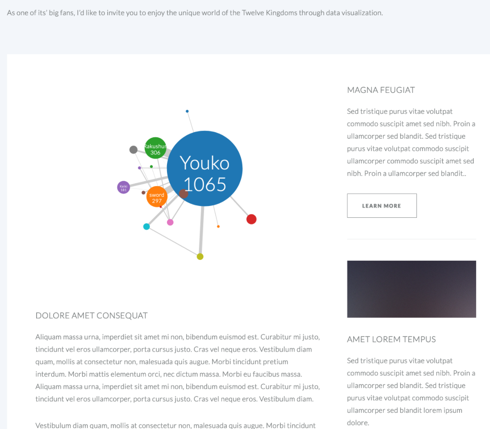

Since seven books, bullet screen comments and bottom comments will be visualized and analyzed, I know my article will be very long. So I need to organize my website very convenient for users to go through.
I add the top sticky navigation, supplementary instructions in the sidebar, tooltips to make them freely read.

Build the website, combine the charts and contents
For the tooltip in bubble charts, I drew the pictures for different characters, even the sword.
And I added detail descriptions for people who are not familiar with the characters to understand who they are. And you can also click the highlighted words in the main texts to see detail descriptions on the sidebar. If you are interested, you can click the button “Read the Book” to read English version book series. For books 6 and 7, they are composed of several short stories. So, I cut them into separate bubble charts.
Usually, more bullet comments mean the part is more important. The highest numbers of the episode often mean the climax of the story. So, I want to show both the distribution of the comments and the climax video.
Because I want to know which moment is the climax part per episode, I combined the chart and the video of the minute with the highest number of comments. You can use the button to change the episode to see the change.
When you click the button to change the episode, the chart, video, and the texts will also be changed.

Add the button for users to jump among episodes.